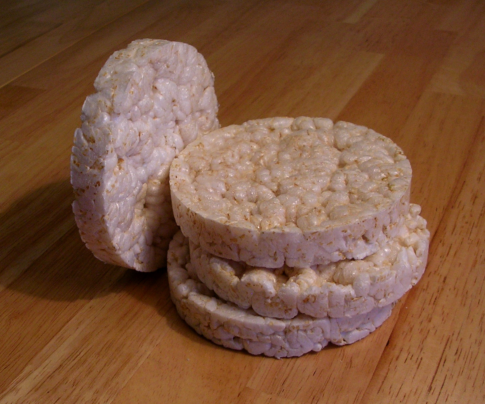

Rice Cakes

Description
Rice cakes are a delectable treat for anyone with
an asian background. Many Asian-Americans love the
delightful blandness and adaptability of the
rice cake.
While a staple for Asian-Americans, many non
immigrants cannot cook these tasty treats.
Today we will be breaking down this dish,
in all of its simple yet wonderful detail!
Ingredients
- 1 cup sugar
- 2 cups water
- 2 cups rice flour
- 1 tsp yeast
- 1 tbsp warm water
- 1/8 tsp oil
- oil to grease pan
- water for steamer
Steps
- Dissolve the sugar in the water by heating it in a small pot.
Set aside to cool down to room temperature
- Mix the yeast with warm water. Set it aside to bloom(usually a
few minutes).
- Add the rice,flour,and sugar water to a large bowl.
Mix until well combined. Add in the yeast mixture and lightly
stir to combine. Cover adn let it proof for 2-3 hours in a warm
enviroment. Add a few drops of oil 30 minutes into the proofing
step
- Once a thick layer of small bubbles are on the surface
of the rice mixture,lightly grease a 9-inch pie pan.Then
add the rice mixture to the pan.
- Boil the water for the steamer first. Add the pan to the steamer.
Cover with the lid and let it steam for 10-15 minutes.
- Remove the pan from the steamers and let it completely cool down.
Remove the cake from the pan and slice into cubes. Serve and enjoy!